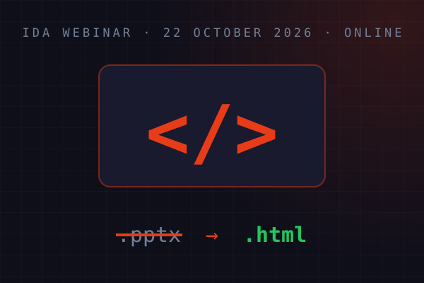
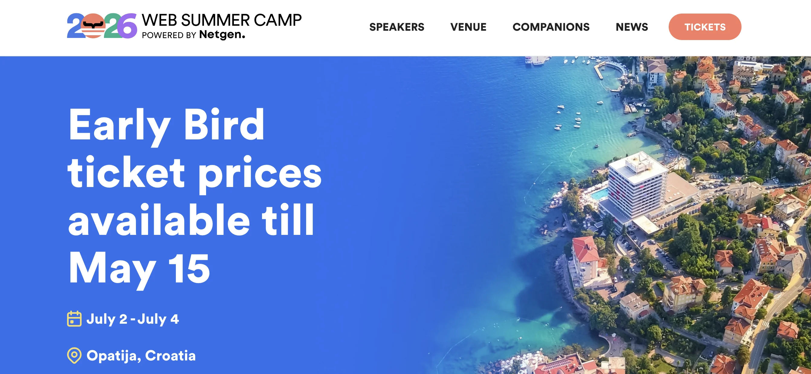
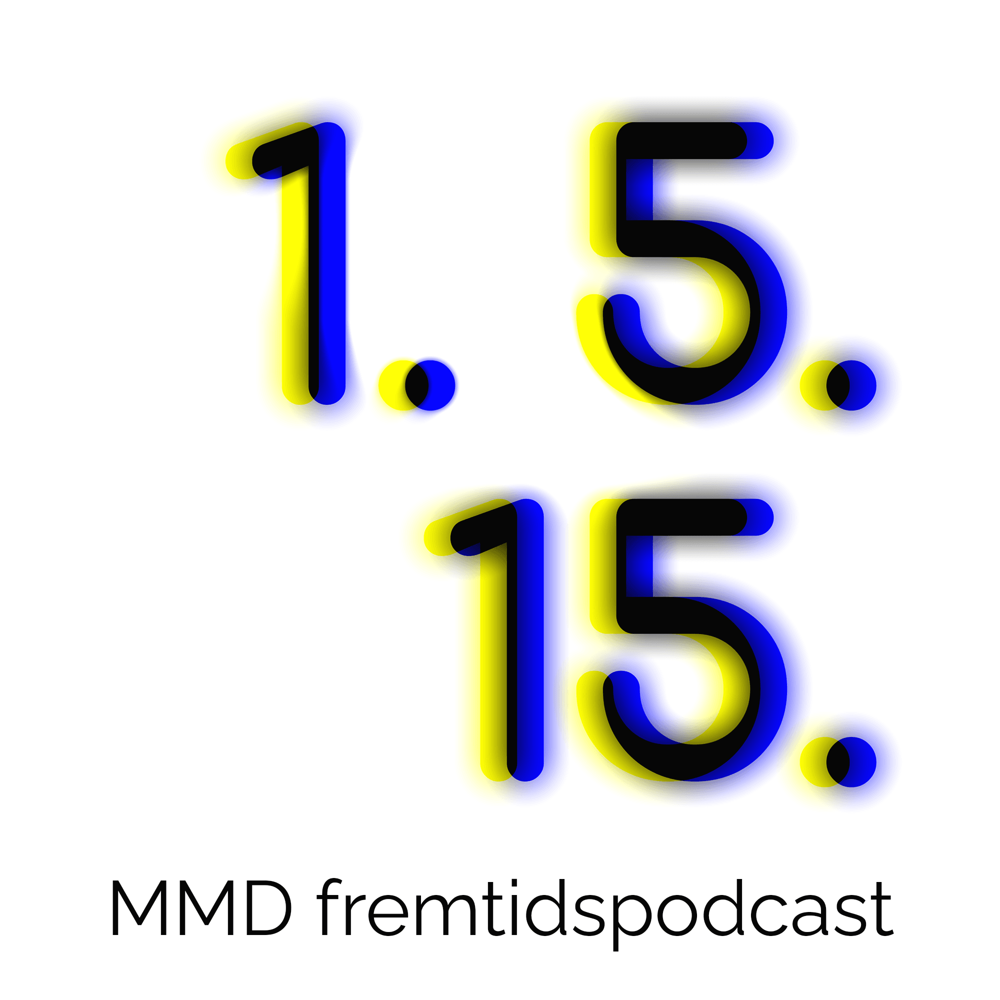

Presentations, videos, podcast appearances, and conversations on AI engineering — AI-first languages, agent protocols, and building production-grade AI systems.

A practical tour of building HTML presentations with an AI agent: written design rules, a working template and automatic checks. Includes the live demo and a downloadable starter for making your own slides in an AI chat.
Watch the recording on IDA Play
Three-hour hands-on workshop navigating the alphabet soup of AI protocols dedicated to responsive, dynamic user interfaces — the third way between a rigid form and a free-form chat box. Why data and UX are where AI applications will differentiate, now that we all share the same models.
Read the write-up25-minute talk on AILANG — how determinism, explicit effects, neurosymbolic verification, and a self-correcting agent harness (motoko) reshape how AI writes code. Delivered on the “AI Tooling, Benchmarks & Evaluation” track.
Read the write-up45-min webinar: ask an AI for a web page, not a PowerPoint file. An AI presentation skill with written rules, a template and automatic checks keeps every slide consistent, and one deck serves the room, the reader and the PDF. Three of its ten decks are borrowed from other talks.
25-min talk on AILANG: simple + explicit, neurosymbolic verification, the motoko self-correcting agent, live demos including Stapledon's Voyage.
The most valuable analytics data isn't in your website tags — it's in your AI chatbot logs. Mapping GA4 thinking onto agent telemetry, Langfuse, and the post-browser web.
Five-part exploration: AI coding revolution, entropy visualization, authority models, development loops, and what AI needs from humans
How AI-first approaches transform procurement and intelligence gathering with iterative improvement loops
Event-driven microservice architecture, MCP & A2A support, multi-cloud deployment, bridging prototype to production AI at scale
These decks are web pages, built with an AI agent following written design rules. Choose the starting point that suits how you work.
Watch the IDA webinar on building HTML presentations with AI agents, using written design rules, a reusable template and automatic checks.
Watch the recordingFrom IDA’s auto-generated English captions. Unedited; technical names and other wording may contain recognition errors. Download the transcript (.txt)
00:00:00Welcome to everyone. I can see there's (AI-generated) a lot of people here, and we're getting more and more people. So we'll just start with me introducing myself, then I'll introduce the webinar, and then I'll introduce our Mr. AI, as he's known at KU, Mark. So about myself, my name is Mikkel. I'm a quality consultant and AI test manager at Atuma. I work with pharma clients, and I'm on the data compliance board at IDA, which are the ones who are hosting this. This is my first webinar hosting it myself, so be nice.
00:00:33And with me, I have Mr. AI himself from KU, Mark Edmondson. Yeah, thank you, Mark Edmondson, and I'm an AI engineer. And yeah, really looking forward to giving this talk today. Very nice. All right, so while we're waiting, Mark, what are you actually doing? What does an AI engineer do? Because as we spoke about before, it's a lot more exciting than just writing prompts to ChatGPT and hoping that it answers something that's not hallucinations. Yeah, yeah. I mean, I would say I'm a platform engineer now, AI platforms, and the platform is kind of everything you kind of need in place to use AI practically in a sort of business setting.
00:01:15So at the moment, I'm working with the University of Copenhagen, doing an AI platform for education of physics for 16, 15-year-olds, sort of AB level. And we're just exploring, you know, how AI is obviously a huge topic in that and how it's going to work. Yeah, I can imagine, especially with, as we know, the whole school situation right now. Yeah. With how do the teachers actually set up developments so that they can use AI instead of, yeah, working against it. Yeah, exactly. I believe you're doing some very interesting things on with your physics simulation and your whole AI language that was actually what brought you here in the first place. Yeah, I came here because I'm also working on an AI language called AI Lang, which is basically taking if AI is going to be doing all our coding, should we be using human languages that we've done before, or maybe AIs have more preferences
00:02:13that can be catered for in its own language and I'm using that more and more on a day-to-day basis. I'm using it to create space simulations and things like this and that kind of like led me into the University of Copenhagen stuff because as I was making this space simulation which I insisted would be accurate 100% on the physics, I was learning things as I was doing it and then showing the sort of Jesper Bruin, the professor there, who's leading the AI PLA project, we were thinking about how we can apply this to students and how they can actually use AI to enhance their learning and not use it to cheat on their homework and all this type of thing. Maybe use it to make presentations instead of relying on PowerPoint, which has really run its course at this point. And I remember when we first met at the driving AR, maybe it was the IDA Life Science one, one of
00:03:13those two, you showed an amazing presentation. And I was like, how do you make something like that? I've never seen anything like that. Oh, first of all, you don't use PowerPoint, or you don't use any established tools. You write it into AI Agent, and then just set it up as a HTML website and work from there. Exactly. Which is what you're going to talk about now. Yes, yes. I believe we're ready to start, probably. OK, cool, cool. Yeah, I mean, you know, I've tried to avoid PowerPoint most of my professional career.
00:03:42And I did used to use R and R Markdown to create presentations instead of PowerPoint. But these days it's HTML and JavaScript because all the barriers that used to be in place about what made that difficult are now a lot easier. Now you've got AI. and so obviously this presentation is made in that vein and yeah so I've explained various features as I'm going so usually I start off this slide which kind of explains who I am and things like this if you've not guessed I'm British I'm from Cornwall originally which is a seaside town palm trees beaches everything like that not many jobs though so I just play guitar in a band there and all this but then yeah in my travels I did move to London where I studied physics at King's College London which is why I'm interested in it now still today and and then I moved to Copenhagen in 2010 and I was only
00:04:47coming for three months and the sort of you know just see how it's going then I met my wife and yeah that was 16 years ago and then you basically stayed here yeah And started off Holosun, which is your AI consulting. Yeah, I mean, that's more recent history. But actually what I was doing before that, so I started off in digital marketing. So I was doing SEO, which when you think of it, is actually very pertinent these days because it's about speaking to bots and trying to show them your website in a way, in a structured way.
00:05:22And that's kind of what we're trying to do with AI now as well. So I think I've got the perfect background for everything I've been doing. And I've written a book for O'Reilly as well. When I was doing SEO, I moved into Google Analytics to sort of measure the website's performance. And so I really got into that. And that's why I came to Copenhagen, to sort of learn more about Google Analytics from the gurus that were here. um and then from there we had a lot of digital marketing data which is very um messy and huge and everything um so I started using data science so I started using R which is a programming language actually um made in Denmark it's released from uh the university uh just I didn't know that but it was there so I use that for sort of forecasting and uh predictions and things like that some more sort of data science stuff and then I got
00:06:17really got into that so I just released quite a lot of R packages and things like this that's where my coding kind of took off and then I was always kind of related to Google Cloud because Google Analytics was exporting to BigQuery at the time which was still is a really amazing database so that kind of doubled down on the Google Cloud and did a lot of yeah expansion into the Google Cloud thing and the whole product has increased over the years and all that so I became a Google Cloud developer expert sort of representing google at some uh presentations and things but never actually working for them they're just sort of giving me uh benefits you know for for talking about it um and then yeah but in various digital agencies um wunderman um ih nordic uh that dev team um but then um once the whole chat gbt stuff sort of kicked off I was just so
00:07:10sure that this would transform everything um I was like okay I I need to get in there this is this is the time to make your own onto that train before I took off yeah I figured if I like did it for two years and um you know and nothing came of it at least I would have spent 100 of my time on this topic and I'll be able to sort of walk into a job as an ai engineer um with that knowledge because I've had that time to dedicate to do it fortunately it's gone well so I haven't had to sort of do that yet um and it's and it's definitely been the most fun I've had professionally uh working in the field yeah because you just are so much more so much more productive than that yeah and you can make some amazing visuals which we are going to see in just yes yes yes well I hope so just
00:07:55before we continue remember to the viewers out there remember that if you have any questions that there's a q a functionality and there's also a chat that we'll keep track of we'll answer questions as we go along so there's no dedicated to a session at the end unless of course we get a lot of questions at the end I like questions bring me questions all good um yeah so hopefully you're not surprised by where you are and uh there's no like powerpoint lovers here who or maybe there are and that's the question like how can you be so cruel um and yeah I mean it was coined actually by this uh alan jagaba uh in 2001 I think we all kind of understand the sentiment behind it um and yeah one is a long time ago we are here 25 years later and powerpoint is still there isn't exactly still there it's still evolving our management colleagues
00:08:48and lead and well people in the leadership layer who are like powerpoint is going to be there forever it'll outlast AI it'll outlast everything yeah I I think this might be this might be the start of the decline I think I mean I'm not you know sort of um selling any tool or anything like this this is uh but I do believe this is where the tide will go you know I think this is where it's going to be um going for the reasons that I'll talk about maybe I'm wrong but you know I think there's a lot of um reasons and everything you're presenting here today that's from what I know open source as well yes yes people can even if they want just get the presentation absolutely their url and just look at all of the needed greater details for it absolutely the cloud guild package that you have the whole awesome repository as well exactly
00:09:34so I've actually got it in the repository open source I do try and do most of my stuff open source it's only if it's um kind of client confidential or anything like that I need to do that um from the r packages I mean I I did all those open source and it's just so great to have people use your stuff and give you feedback and all that. So it's a win -win, I think. So open source all the way. Yeah. So basically this obviously is not PowerPoint. This is a HTML page. You could actually go and visit yourself if you can see it up here in the, in the URL.
00:10:10And yeah, I mean, I've been using it sort of for all my presentations, for the last kind of couple of years and it's kind of evolved over time and yeah this is something I'm using on a daily basis and I think it's important to know that it kind of evolves so the first version that I had even the one that we saw before it's moved on since then because as I kind of think of things I would like to do but that's it from what I understand the genius thing about the way that you do it when you use for example co-pilot with powerpoint then it generates a new presentation every time or even when you're doing it in the PowerPoint until it just changed this slide then it suddenly gets weird ideas and goes beyond even if you establish pretty clear guardrails like hey only work on this particular slide yeah of course and then it does
00:11:01something completely different yeah and that is yeah that is something I'd cover basically it's like if you're if you're just asking in the prompt for AI to do things that's kind of a suggestion it's never 100 verifiable that's going to do so I've definitely developed a process where you get more trust and more verifiable results in in what you're doing um yeah so I mean powerpoint you know had its place obviously um for one thing everyone had um powerpoint installed on their laptops a lot of the time I mean another thing you know with all the geopolitics going on at the moment there's a lot of like examination about um what you should be installed on your computer um but yeah and it was easy right I mean you could kind of like um place a box by hand you type it in and you know anyone could kind of get up and running very
00:11:48very quickly um but that was also kind of its um fallback in that you know the the powerpoints kind of looked a bit samey a little bit if you didn't have the design then it all looked a bit boxy maybe too much text you know all of this type of thing and it requires a lot of time to make it look pretty yeah I remember for my own client and university presentations I had to spend a lot of time with the different graphical settings rounding the edges finding the correct shape using those to make the background where I was just like okay can't I just tell you what I want and then you'll give it to me exactly yeah and you know it was kind of like a soul-destroying experience even making them let alone sitting through them but now I mean the reason you didn't use html and all this was that You didn't know HTML, obviously, you know,
00:12:31you didn't. And even if you didn't know HTML, like the time and investment it took to do that, to make it kind of wasn't worth it just for a quick sort of presentation doing that. So what the now we have AIs that can code for us, the time to do stuff is so much reduced that you can very quickly iterate and get something that you want quicker. And yeah, I think that is the sort of shifting point about what's going on. and I think from my point of view I've actually started to forget what file I'm actually working in yeah and you want to spend more time in the actual idea that you want to be um doing you know you want to be talk thinking more about the concepts that you're doing and if you happen to spend a lot of your time on the formatting this box and all this you're kind of working on the technicalities and not the
00:13:18idea that you're trying to communicate and I think that is the I mean nothing's going to stop whatever you know in html or powerpoint if you've got a bad idea you know nothing's going to be uh going to save that but if you've got more time it also presents from what I understand shows you okay this is a bad idea way earlier because you have to generate then it generates you don't spend several hours making trying to change your problem slightly and getting the same type of horrible results yeah and going like yeah but I have a good idea but you cannot communicate it properly then it's not a good idea yeah so what speed gives you is iteration yeah the more times you can iterate on your idea and sort of look at it the more you can kind of hone it and sort of pare it down and make it exactly what you want to be doing um yeah and
00:14:04so I kind of try and illustrate this with the this slide um basically when you're working with powerpoint you're kind of going through a lot of conversions all right so you've got your idea at the start um and then you put it into uh powerpoint uh the dot pptx is a and it's actually a sort of zipped up uh xml tree and we heard just before this uh for before this webinar that um even if you've got that and you bring it to say here it might not have exactly the same fonts installed as you had locally on your laptop and so you're actually going to get not a hundred percent sort of copy of what you actually had on your laptop anyway and he was talking about this is a problem you're just checking no no I'm not on powerpoint oh great you know so I'm pretty sure our technical manager at this webinar studio is just sitting out there
00:14:53nodding at you I hope so I can't see him but it's gonna um but then you've got like another conversion about the projector but then say I mean powerpoints serve a lot of purposes so you know there's obviously the the the display on the screen but there's also sort of maybe what you send to people afterwards so maybe you export a pdf that is another sort of conversion that maybe you lose a lot of information and then maybe someone screenshots that and sends it to their boss and then they're like looking at it on their phone and it's all kind of like lost in translation from the original idea so there's a lot of kind of barriers I think in in doing that and it does kind of make sense Because when you look at actually what a PowerPoint file format is, which is something I've done now in AI, if you're looking at just sort of
00:15:46doing a title on a screen, on the left here, I've got a kind of example of a PowerPoint code. And what PowerPoint and Word and all this is, is actually just an XML, lots of XML. And then they zip that up and they give it to you. And then when someone opens it up, it unzips the XML and displays it on their thing. so so even if you are using ai to help you with that the ai has to deal with a lot of different xml trees to sort of even just get something simple now if you have free kind of choice about what format you want to be doing I don't think powerpoint would be the first choice you know because you've got a lot of complication there and what is the best sort of visual medium for communicating ideas in the modern world it's the web it's you know that is where all the information
00:16:33all the sort of technology and where that is so also all of the in the powerpoint all of the rules are also on top of it so you have the hml files with the different what you say content and format but on top of that you have the rules that microsoft has set in yeah or how things should look how things should feel everything there that is that can be nice for some people but a lot of the time I at least find it very limiting yeah and you're trying to get ai to do something that goes oh this is not possible in PowerPoint but I know it's just a HTML harness so I know it's possible yeah you just you just have a rules prohibiting you from it exactly yes and I am like working with um with PowerPoint formats but what I do is I do unzip it and I look at the XML and then I pass it
00:17:17into text and I've got a tool to do that and I'm using that for Word and all this so the format is kind of immaterial for me now for when I'm ingesting it in so like um you know it doesn't really matter how how I get it but when I'm kind of presenting I'm going to pick a format which is going to be the best for visuals and at the moment I think html is that is that thing like if you look at the thing on the right here that is showing exactly the same thing yeah but you can see it's only three lines compared to all that xml tree and you can kind of guess what it does just from sort of reading it um so yeah I think if you had free choice html would be the way anyway it's only because of yeah traditional sort of defaults that you we don't do that and um so what I uh attest is
00:18:10that once you have this kind of speed to delivery and you can iterate then you can spend more time on the idea which is kind of where you want the power of your points to be like uh you know more more in there and less on sort of fiddling around yeah exactly so spend more time on the actual content you're trying to communicate instead of battling with how it should look and oh what color should I use etc exactly and also to avoid adhering to the very limited rules that you're allowed to in things like powerpoint and as you said the whole trying to go think about the content not the format that's the whole strength of ai yeah it's not limited to format that's why we have mcps kicking off so much is because they can take the best from each type of what do we say format and merge it together or use the best format for each
00:18:58thing yeah I think what AI is really good at is taking a lot of unstructured data and turning it into something else turning into structured data and all that so you know that's where the transformation and another thing I'm doing is with emails like the email history I've got a private AI working on my laptop that can go through all of my email history You can parse out every PowerPoint or words that I've ever got. And that is kind of more unlocked than it was before.
00:19:25I had all that data before, but it was hard to get to. And, you know, hard enough that I didn't really think about using it. But now I have this. I need to look into something like that. I'm getting so many emails, both from clients or promotions or these webinar conferences and everything just rounds up. Yeah, yeah, exactly. So I've got, yeah, so I've got an AI that is passing out my email and doing it locally and that kind of thing. But yeah, that's kind of side effects about what's going on.
00:19:54So, you know, obviously I'm trying to be a bit impartial, but, you know, so what do you gain? I think you gain that you don't have a license to Microsoft, for instance, or another one. Obviously, there's OpenOffice as well, but, you know, that hasn't really taken off for every reason. you don't have to worry about the formats being swapped because of fonts and all this type of thing because the page this sort of html brings it on its own um if people have a browser they can open it you know so if these people are watching it now they could go and go to that browser you could send it in the link in an email very easily you don't have to attach anything all that kind of thing um so that's very easy to distribute um and then um for me when I'm sort of doing the PowerPoint presentations, you can actually check it into version control. I use GitHub.
00:20:44And it's a lot more friendly for doing that so that you can kind of track changes and roll back and all this very, very easily. And HTML is wonderful. And it's being, you know, you can run Doom on it. You can run everything on it, right? So these days. So you have all that power kind of unlocked and you don't have to wait for features for PowerPoint to sort of bring that in and things like that. And I think a lot of PowerPoint sort of flexibility does come from importing HTML into an iframe or something like that. So, yeah, maybe.
00:21:15So why might you still not do this, though? Let's talk about that, because obviously we live in the real world and things like that. So maybe there's a company template or something like that. Maybe there's an insistence on using that or something like that. And you tell me, what do you think is a barrier? Yeah, for example, at ours, we have a whole CVI, so company visual identity with templates for PowerPoint. and things yeah but even that is again just hml and harnesses so you should just be able to decouple that into instructions quite easily until so there's a bit of work maybe to like transfer them over but you know I don't think it's too bad in that sense um obviously if someone wants to edit your file you're kind of assuming that they're using ai as well yeah so there's a kind of assumption of ai maturity that you've got um if they want to edit
00:22:04the file um if they're just viewing it fine but if you're yeah wanting to edit I send it to you I'm gonna have to sort of make sure that you've got the skills installed and all that but that's what I'm trying to communicate today is that it's not that hard yeah exactly I mean if you just have the same page then I suppose it's easier than dealing with the potential risk of powerpoint funds and different pages there yeah Yeah. And you need a browser. So maybe, you know, maybe some people don't have a browser. I don't think that is many, many people these days.
00:22:35But yeah, maybe. And you don't necessarily need a live internet connection even. I mean, yeah. So I'm doing this online now, but yeah, I can run it locally as well. Which I imagine can be very nice because I have tried going out to clients and I was like, can I please get access to your internet? And they're like, no, no, this is completely secure for us when allowing externals yeah okay and they had to route it through my mobile data and that was not too bad that was not too good not too good yeah so vpns and things like that maybe that will play into play but I think these are fairly solvable problems and the and the animation stuff maybe you've got more access to like the defaults that you've got in powerpoint maybe you like those um so you need but I think all these are sort of replaceable um because for what, and I was trying to do a demo
00:23:20later. I don't know if I've ever run it yet. But a lot of the time, you're just prompting. I'm not writing any code. This is one thing. I'm not coding this up or anything like that. I am just prompting. So I would like this. I would like that. I'm not sort of talking about the technicalities or anything like that. And that's why I believe everyone could do this. You're pretty much doing what people are already doing in PowerPoint, just without the limits and with more control of what you actually have. Exactly.
00:23:46Yeah. You're just doing it in a slightly different, what you say, container. Yeah. And if there's any points here, for example, if you're at home or at office or wherever, you're actually viewing this, think, oh, you forgot to mention this advantage of PowerPoint or something, feel free to write it in the chat and then we can look into that. I'm interested in the counter view as well, because I'm like, why are we doing it? So I try and address some of these issues in this. um so so what might if you're doing it naively um if you and I kind of are working on a presentation um then I might do I get a very nice looking one and then you say oh great I'll do it as well but we get two different sort of styles you know and it doesn't look cool you know it doesn't look the same and all this type of thing um and so yeah
00:24:35I would argue that a skill is the way you kind of do that and enforce the style I don't know if you remember my presentation from before but this it was in the same style yeah I remember it vaguely um just for the people at home what is a clawed skill yes I'm gonna get I'm getting into that in a minute yes but uh this is what the uh yeah so a clawed skill is the next slide good question um so what a skill is I mean it's a bit like a prompt okay so a prompt is where you're kind of putting in instructions but a skill is kind of a format where it's still a prompt it's still there but when you talk about a certain thing say as such as I would like to make a presentation then the AI kind of looks at all the skills it has and says oh yeah this
00:25:23one actually will probably give me more information about what I need to do and then it will import it in so it's not there all the time it's only in there when it needs it. Kind of like if you made a custom co-pilot agent and in the prompt you give it specific instructions hey when working and word documents please when I'm drafting a section do it like this exactly like this I only take from these sources exactly yes and it is I mean agents came before that but I think skills are a bit less um complicated than an agent it's not like calling an entirely new agent because it is a text now I'm going to show you this so you know when I say make me a slide the ai says oh that's a slides job I'll open up the slide skill So then if I pop over to the actual skill that I've got, let's
00:26:04make this bigger just so you can see. This is the open source GitHub repo that I have. I've got it set up so that basically every time I push to this GitHub repo, it will publish on the website. So if you notice in the URL, I've got presentations. That's because everything is in this GitHub repo. And this is the skill that it is. Now, if I look at a skill, it is just a prompt, you know? It's nothing kind of like mysterious or anything like this. Yeah.
00:26:36It goes into extreme detail, you know, of all this. But I haven't written any of this. Yeah. I've asked the AI to make this for me. And as I am updating my preferences about what I want the presentation to do, it's adding to this skill as we go. So this is sort of like a living record about what I'd want my presentations to look like. So if you download this now or clone this and ask it to make a presentation, you'll get one looking a lot like my presentation. Yeah, I actually tried that at home and it worked amazingly. I fed it the file I wanted. I think it was the note from the last conference we were at actually. And it made a very nice presentation that I just showed to my colleagues. Absolutely. Oh, that's brilliant.
00:27:17And people were like, oh, how did you make this presentation? I was like, I didn't. I got this repo from some guy. Yeah, yeah, great. From Mr. AI himself. Yeah, Mr. AI. Well, obviously, this is showing my formatting and stuff like that, but you could very easily download this and then say, OK, I don't like Mark's styles or whatever. Throw all of that away and put mine in, you know, change it to change the red to blue, all of that kind of thing. And it will then update it. And then from then on, be the one that you want.
00:27:44Exactly. You can take the scale and go into your cloud and say, hey, please completely redesign this to follow this template or something. And that's a really good way of doing it. It's like show an example. show like um even a powerpoint you know that you've got and it will look through that powerpoint or the presentations the best is the assets I mean I've got like an assets sort of folder with all my stuff in it goes through there and tries to keep a consistent style a lot of companies generated as well yeah yeah I can show you I didn't plan to show this but I'm actually quite proud of this um but the uh I remember the physics simulations that you showed and the pictures oh Oh, yeah. Well, this is not quite that. All this is, is just colors. Yeah.
00:28:23So it's nothing so sophisticated, but it did all this. And this is kind of where I kind of keep a public record of the consistency. And a lot of companies have this. I mean, the digital marketing agencies I was working for had a page like this for how to use their brand. Yeah, we have a PowerPoint page office. Yeah, well, there you go. Yeah. I've got certain images that I like and things like this. But this is kind of used as the basis for all of my stuff now, like presentations, Word docs, and that kind of thing.
00:28:50So one thing I do want, so obviously that's just the text, but what also happens is you might have more specialized needs in there. And what you're trying to avoid is just loading in all this text. The longer the instruction you're giving to the AI, the more things it has to keep working at and all that. so you know the advanced models can handle it but you know if you don't want to use a very expensive model a cheaper model then you don't want to overload it so what you do is you kind of selectively give it information so in this resources tab basically this is for when it has sort of specialized knowledge it wants to use about the slides so this is say if it's going into like what the present what the template is and things like this so this is actually a template that it starts from so it loads this in um at the start
00:29:40and then works from that um to do that so it doesn't have to redo this every time um so that's a very good way of kind of getting a head start um on what's doing and that's very similar to what if you're using something else than claude can you do something similar feed the villain and just tell whatever they say god forbid jet gbt or deep sea or something else and just mistral and just say hey I have this claude skill please converted to be understandable by you or even I imagine it's markup so it's understandable by yeah yeah yeah and this is this is the great thing is that yes Claude and Anthropic were the people who started the skills but it's been adopted by the entire agents for the entire industry so now Gemini supports it OpenAI supports it so skills are a universal standard now which is really good really great I mean I know it's in Claude here but
00:30:31actually the demo I have planned later is on chat gb so uh codex and things like this yeah because I because you had a question about is it only clawed and I was like no no no it can be it can be yeah it could be anything um yeah so so that's kind of what a presentation skill is and you can have skills for everything you know skills for and I have loads of skills for everything skills for your email skills for email exactly all the kind of maybe roles or tasks that you have as soon as you kind of ask it twice then maybe it's a good job to put it in a skill yeah yeah remember we talked about um your virtual employee you're working on yes different layers I imagine there's a lot of skills there for the different exactly yeah what commissions to do yeah so I've got this uh danielle uh and they are an ai assistant which
00:31:20I think an ai employee which I think is going to be everywhere at the moment I mean uh uh that all the major labs I think in the last month have just released the sort of version and danielle has its own email it has its own uh github account it has its own thing and then it's got a list of skills that it can call upon and then on a schedule it kind of looks through those skills looks at my the emails that it's got and kind of works on in the background what's going and presentations is one of those skills that it can work on amazing I look forward to doing a webinar or something on data at some point yeah it's very exciting work and uh yeah you do um yeah so what I was just sort of talking about with the with the slides is um you can kind of have rules for taste about
00:32:05all that that will be in the sort of general skill text but if you're kind of um uh always using the same template then it's worth having that file available and that's what I use here which is kind of uh keeping everything so it doesn't have to do so much work each time and that makes sense right that's the same as human beings with a PowerPoint template you know very very similar yeah and then but one thing I think is an extra that a lot of people maybe miss is these sort of automatic checks so verification and that is where you ask the AI to create a script to check stuff okay because hallucinations and things like that you definitely don't want to get into a state where you're yeah putting out information that you don't want anything where you need sort of 100 verifiable information um make a script make a deterministic script that will look at that and so for
00:33:00for instance for this one this is a I've got a script in there that will check if any of the text is falling on the page that happened a few times when I was first using it you know and so I kept having to try and correct it say oh yeah your text is overflowing here and then eventually we're like okay let's make a script so that I don't have to keep telling you about this you'll just run this each time and and then you'll self correct yourself once you're uh once you see that yeah exactly we work with automated checks a lot in uh in the pharma industry if there's so many yeah at this point because humans are great humans are the best but we miss things we're not infallible yeah if you need 100 accuracy you said your subject matter expert to look at the thing and then you get the ai to look at it and And then in very
00:33:47sensitive cases, you get another AI to look at it, to kind of supervise. Yeah. And that's working amazingly. And as we were talking about earlier, like trust and verifiable information is the golden bullet for AI workflows and things like this. Which is why it's so amazing in Denmark of all places. Yeah, yeah, exactly. Denmark is the trust capital. So, yeah, so I write down kind of my taste. Luckily, my family have lots of artists, so I can ask them for their opinion and things like that as well.
00:34:17So I've got kind of various kind of brand sort of things that have come in. And I've got this template so that it doesn't always start from scratch. It can kind of work on it. And the template you see has evolved. So I've got things like a PDF export down the bottom here. I didn't turn it on. I forgot. But there's a sort of timer here as well. Yeah, the timer is automatic. you feed it what type of content you want and then it goes oh this content we expect will take like five minutes or something yeah I forgot to put it on here because I'm so excited but we've got a clock here so you know I don't think we'll uh we'll overrun um but um yeah how are we doing for time actually I think we're pretty good I mean you can just go on um and it's got things like a log so I can ask questions and things like
00:35:03various things that I've needed for other of a presentation that I've been doing yeah oh it's also got the start and light theme um so you can go extreme yeah I didn't recognize the presentation at first because when you send me the draft I looked at it in the black screen ah yes yeah I saw it and you're like oh you made a new person no no no you just flip the light swing I prefer the light theme but I I think when you're sending it to people um it can be better as a doctor exactly yeah I know from experience when you try and have powerpoints in both light and dark team it looks horrible in either or yeah yeah so you can do you can you know you can have websites are very familiar with that having a dark and light theme so that's that's kind of came for free with that um and as I talked about having
00:35:45automatic checks I uh in ai in general that is my that is my kind of takeaway from the last few years of working in ai is um what is the sort of consultancy of choosing when you have ai do kind of creative non-deterministic things and when you have a verifiable um check or guardrails as you were saying on that and having the right combination of that is a is a sort of critical part of having trusted ai in your workplace that is that is at least in my word as well what separates the dude ai use from the bad ai use and what prevents it from running wild yeah exactly um yeah so yeah so I've got a kind of few rules about when I used it so kind of computer check it can you run a script if it's just yes or no then that's a good sort of thing that you can put in the script.
00:36:34Is it the same structure of your time? Then a template is a good idea. Then everything else is sort of rules that are sort of put in the words. So what I want to do now is just show a demo of that. Is there any questions that we can answer before that or anything like that? There's no questions yet. I think people are too enthralled by the conversation. OK, that must be it. Yeah. But maybe there will come questions after the demo. So I think that's just the suspense that everyone is. Is it? Everyone's like, okay, now you're displaying how to do it and why would you do it? Okay, how can I actually do it without any coding knowledge and without anything?
00:37:13Well, I'll show you. I mean, yeah, it's difficult because I am a coder in that sense. So I need other people to tell me how easy it is in that sense. But from my experience, I mean, you've downloaded the template as well. Yeah, exactly, and I'm really not a coder. I did some coding on my bachelor. but then I swapped to game design and then compliance work. Very interesting journey. But you got something convincing out of the template. Yeah, I got something very good. I got a lot of colleagues going like, oh, that's amazing. Okay, well, brilliant. Okay, great.
00:37:41That's probably how I got the invite, yeah. So what I'm doing here, you asked a question about, is it only Claude? And then just to prove that, this is now Codex, which is in ChatGBT. This is similar to maybe Copilot that you've got running in the systems and things like that. and um what I'm doing here I'm running in chat gbt I put a presentations and this has downloaded the uh template we've got the template here so so now what I'm going to do is I am going to look for the prompts that I prepared myself good here it is and if there's any questions to the product to the process please feel free to ask again there's all kind there's I think there's people with all kinds of technical skills here or lack of technical skills and we want everyone to be on board yeah I think the interesting question is like where technical skill is needed versus
00:38:38you know when is it going to come easy enough on the ui to make it kind of universal I think that's kind of what everyone's kind of breaking for for the ai like when's that will will happen and I think it's just yeah as companies create what we saw with the whole tpt thing as soon as people could start conversing when it became a massive thing but we already had the ai behind that we had neural networks that worked more or less the same but you had to know what you actually wanted and know the weights yourself and um yeah and they didn't realize it would be so popular as well I mean you know they were like it's just a sort of you know connection to the the text model we have you know why is it would it be but it nails the ui and I think why coding is such um been
00:39:20overtaken by ai now is because the sort of um the ui for that the ux experience for developers is kind of nailed now you know it's like it's really good you just do that and it does it so we're kind of waiting for the other industries to be but I'm sure it will happen I think it's happening now in legal um I think more and more legal I saw some amazing things in uh what do you say game development where you just write like oh oh there's a street there's five trees each of them There's a streetlight next to East 3.
00:39:50It has gravel road going from it. There's kids playing. And then it generates a full 3D environment of that that you can walk around in with characters that act based on AI instructions. Yeah. I mean, actually, with my daughter, who's 11, we've made a game for her. She's drawing all the characters because we don't like the AI art to do all of that stuff. But we have built the game around it. And there's a sort of cozy game going around the village and things like that. And it is, yeah, it's amazing. And I'm doing a space simulator game, you know. I just love it, yeah.
00:40:22Anyway, going back to the demo, here we are. So this is, yeah, we're in Codex, and I basically are looking at add one slide to the Def by PowerPoint slide, which is what this one is. And I'm going to call it IDA from Slides to Simulations. I've got a file I want it to use to do that. and add a caption and yeah so I'm not I don't think I'm adding anything really technical here and like use css use this thing so um off it goes now I don't usually do live demos so I usually just video and I think we also know that from all of the conferences that we've been on there's always when people go yeah I'll do a live demo then everything just breaks I know yeah and it's awkward for everyone yes actually especially when I remember something they were like yeah I'll just draw it but then he brought up paint and started
00:41:18drawing what he wanted yeah all right that's something um but we'll see how this goes so you can see it's working it's doing its stuff um it's running the commands and you can kind of click on here and see that it's it's doing so at least we're connected to the internet so we'll see we'll see how it goes in there and um yeah so now model choice um I designed the template in a quite a good model I think um opus 5.5 or something like that but um for day-to -day running of it you don't need an expensive model at all I think one other sort of consultancy thing is making sure that you don't use too big a model for what you want to do it's expensive it's slow um and there's no need and you use all your quota up on sort of needless things so um so yeah you can see that now it says it's uh it worked
00:42:18for one minute it viewed an image this is the image I wanted it to do you see it's small and then um it added and so now I can read load so actually it's got a uh browser in here so you can kind of see that the your work as you're doing I'll refresh just to make sure that that's working so you can see this is the sort of local version of the presentation that I've been working on and then this deck here is kind of what I asked it so there we are that's the um that's what I asked it to do and this is a still from one of my games that I'm working on uh doing all that so that took a minute yeah exactly and that's a very very simple one of course we can if we want to change the background or exactly and the point is it's fast right so what if you want to add like a custom
00:43:07animation now uh yeah so what kind of custom animation or that's it that's a good question um you said that you were working on a spaceship uh yeah yeah I mean I won't do it today the demo gods have been kind so far yeah but um but basically the idea is that it's quick enough that I can iterate on this and so if I've got another image that I've got I can kind of pull it in and pull in news and that kind of thing yeah and if you were to do anything now for example change the change the title or other description or anything then it reiterates on what's already there it doesn't have to generate something no And it's not working with, what do you say, the very probabilistic ways that... No, exactly.
00:43:52So what I'll do now, if I'm happy with this, I'll iterate in this. And usually I don't take the first result. I'll say, yeah, maybe this, maybe this. And then I'll commit it to GitHub. And then within two minutes, then it's up here on the slide here. So maybe I will try that. so we can see if we go to the same slide here it does not have the one that I've got so what I'll say now is uh commit and push to github and that of course requires set up to the top so that's yes that is a bit of a dead thing but um again the the agents can help you set that up as well so but I think you know there is uh the ui stuff of that that is more for presentation but this this all runs completely locally so this is on a local uh like a thing um so that's now pushed up
00:44:46um open the pr I think an interesting thing is when I look at the slide it already has like the rounded corners and the nice like yeah black bars and everything I remember if I input in powerpoint I have to do that manually yeah I tried to ask copilot hey please make the design of this with rounded corners and make it stand out completely malformed everything yeah so I mean it hasn't had to do much here so to add this slide and then the for the template has kind of done the formatting for it it's made a decision to make this a sort of impact word um so it's put simulations in there so it has made decisions on your behalf um and then it's imported this gif and things like that so now and this is also a very simple example like you can go as much in depth as you want then you can
00:45:35either have the ai handle a lot of it based on the information that you give it yeah for example just a couple of notes or you can go very in depth and say hey I want it like this I want this box to be green I want a text here that says hey this is awesome or yeah exactly I want a custom animation because I remember you did those as well we cannot show those for the yeah I think I do have a few demos actually so I can say yeah was it this one I was showing yes yes yeah I think uh the one before that yeah um the machine that worked yeah so the demo gods have been kind I think so we'll see how it goes but uh yeah so basically what happens is I just asked the question um it read the rules and that skill um it then wrote the html for me then
00:46:19it ran the script to kind of lint and make sure that everything was okay and then it said okay this is good enough to invent and and then I can what is linting is that just the security and the checks yeah sorry linting is a term but linting is checks yeah linting is guardrails linting is like did it um yeah the deterministic checks that are all of the things that normal gpt's ignore even when you tell it very precisely hey please be concise or please only answer this yeah of course I'll do that two prompts later oh I'm sorry I'll do it from now on and then still gets it wrong so with your linting thing that is a very important step for you to sort of over time put in the stuff that you care about you know so things like that's too much text or that kind of thing can all be in
00:47:00that linting deterministic check and and the problem is when you're doing that when you're self-correcting the ai you're just becoming a cog you know you're you are now part of the process of kind of just um changing the sort of mechanical things you want that to be moved to a script so the ai can check itself the more you can make self-verification work the quicker the stuff goes and you only want to sort of make decisions about things you care about you know not the kind of practicalities exactly so you can focus on the whole discussion with ai automating the fun things now we wanted to automate all of the yes orange shapes all of the boring into the put the box here put the color here make sure you want to focus on the message that you're trying to communicate and the content exactly you want to forget about yeah all of that So, yeah, I've got a few demos of maybe
00:47:49one from what we were talking about before. And, yeah, this is just a few examples of what it can do. So, yeah, for this talk in particular, what I do is I kind of mix and match. So as I make decks and slides, I can move them and put them into other slides, you know, like you do with PowerPoint and things like this. so the intro slides that about me and all that and the contact slide that we'll have at the very end kind of standard that I have in every presentation so I have those kind of available as modular abilities and I can do similar for other content that I have so if you're reusing slides a reusing thing and that's where having a good sort of consistent style is important right because if you've got like one PowerPoint presentation with this style and you want to put that into another one and it's
00:48:40different it looks a bit rubbish doesn't it and all that so so a way of kind of keeping consistency uh on that is is really important to me so this for example is something I've uh do for the university of copenhagen we're doing that ai platform for 16 year olds um and part of that is that you can create simulations of physics uh sort of uh situations and things like this and um so this is a sort of engine and this is not an image this is actually a working animation that you can have going and the idea is that the student um can be used this to sort of learn uh about pressure and volume and temperature and I can see the different settings yeah so this is um in the actual application this is just a still this is sort of an example that I've pulled in from there um but you know it was a almost you know look look at
00:49:32this please pull it in so I can use it as an example that was pretty much the prompt I had to do this as the student is doing in the real application then they they can make sort of differences to the pressure and things like that and then the AI tutor is seeing what they're doing and kind of helping them learn about pressure and volume as they're doing that so this is kind of an experiment that they can run so just with a couple of more iterations of that problem for example you could have that fully functional exactly yes yes so I I thought this this was one of my favorites I thought I'd include it uh in what's going on um and then uh yeah so this was an example of a sort of format of a slide we had this in in the presentation that you saw and um so here I'm I'm kind of
00:50:17advancing the slides like an animation but in in this case it's now going in a loop um so um and this is kind of illustrating the process of how I work with ai I always have a very good sort of design document up front um and then I have many models kind of critique that design and sort of look for um things to disagree about and sort of make it better and better the design um and then I make a plan you know but anyway the the general point is that this is a sort of a new sort of way of presenting information um that is maybe harder to do in powerpoint yes it is very special here like you can this is almost 3d I remember if I have to do this in powerpoint I need to set up animation yes yes yes and this was this was literally just prompts I wasn't sort of and I
00:51:05iterated maybe five times or something to get to something that I wanted to do um yeah and so that when you're like doing these presentations definitely um you're writing for three different audiences um I would say and this is more general about powerpoint as well um but um you've got sort of now what you're doing a webinar is actually slightly different if I was doing this in a big hall or something like that I definitely wouldn't have as much text on the on the um slides here but because we're kind of in a webinar environment then it's easier to read and people can zoom in themselves and things like that we have one comment yeah uh from annette it all looks great but I'm a bit lost in terms of doing a slide deck myself this way yeah okay um well if you were doing it as it stands now um you would be downloading the or copying the skill that
00:52:00you've got here if you want to do slides like mine then you would copy this skill over and maybe you can explain as well because you did it as well so I'm talking from a technical perspective oh that that's a bit of a while back but I opened your repository and already had all of the instructions for how to set it up so go into the presentation slides on the link that you'll probably include at the end of the documentation yeah the presentation and then just ask the ai the ai needs to have access to this this information do you need to download or can you just copy the url when we're here and tell the ai hey please download yeah yeah that That will work as well. Yeah, that might work because I remember with GitHub, sometimes it's very interesting how you have to download and clone a repo. Yeah, yeah.
00:52:41Especially for non -technical people. Exactly. So if I were to set this up, I would go into this one. So the presentations, plot, skills, presentation, slides. Yeah. Copy, paste that URL. Go into my agent and say, hey, please download this down and put it somewhere. Yeah. And then, hey, I want to make a slide deck in HTML. Yeah. Or please make a slide deck and use these skills as the rule set. That would work in Claude, it would work in ChatGPT, it would work everywhere. Yeah.
00:53:10And that's maybe an example you can use to see how it works. And then if for your own stuff, then maybe just start from scratch. And, you know, you know now it can be done. So now you can sort of ask your AI, like, please help me set up the environment for doing this. please set me set up the skill to do this and that's the thing it will do it for you I mean this is how I started I haven't done any of this myself I have it's me asking the AI to do it on my behalf so but now we've had the idea out there now maybe you're inspired that you can do it with the AI what AI can do in that regard it would be fun to set up a workshop where we're actually going to depth with this and look at work with it with different people on this yeah I
00:53:55mean I actually ran a workshop yesterday uh using this skill as an example uh because um I was practicing for today um but um yeah so yeah there's workshops out there um yeah I'm interested in like yeah the where the technical how much technical ability is going to be needed I think that's going to get less over time I think they're going to make it easier and easier and easier to use these skills um in in the interfaces so um yeah it's a good question though yeah and that's something uh yes and if you have any follow-up questions or thoughts on the process still being too complicated feel free to let us know and then we can uh go into that it's the kind of thing that once it's all set up it's very easy but maybe there's a bit of setup uh stuff to do okay in five minutes so yeah so when you're writing for free for free people
00:54:47you're actually um can you send me the slides this is why I've added the sort of pdf export down there that's um and that will actually give uh more deep if I push d I actually get more details on that um in slides that's basically the writer notes for example if I'm at a client presenting this I normally have a two slide decks I have the deck that I'm presenting and I have the deck that I'm giving to exactly exactly so so with html you can kind of hide that behind the kind of it doesn't have to be just text it could be images and stuff like that it's also very nice for conferences or presentations or things because I remember getting a presentation that was like 70 slides with a lot of nice visual information and then some very confusing editor notes and deposits yeah okay yeah so you can really help out there I mean definitely
00:55:34ai's biggest issue is that it will write too much yeah there's content it will write so much so a lot of the things and I think even here is written a bit too much actually um but um yeah pairing it down to having especially for a big room making sure but that's kind of just general powerpoint presentation um things so but for in the room you've got a big picture you try and keep it you know just big headlines things like that if you're sending a link obviously that can be a lot more like this situation where you can kind of send a bit more detail and things like that and then we've got a kind of pdf so we can and you can even take it further you can say hey please make a more descriptive version of this for blah blah blah client that wants it delivered yeah and I mean for for clients
00:56:15if you want to make variations that's very very simple to do because you yeah you just duplicate it over change the branding or something and then you've got you know another one yeah in a very similar way um yeah so I don't need to kind of email you this link uh or or presentation it's all online now so you can kind of uh maybe yeah click on this link afterwards if it gets sent and you'll have this presentation um to do that that's kind of uh the reason to do that we've got five minutes so I'm just going to make sure that we cover it all um yeah that's just my information about um what's going on I'm on linkedin here I've got a website email this is my language that I'm developing which I spoke about last time an AI language for AIs I do some workshops around this type of thing as well and I'm actually
00:57:13started blogging or sub-stacking emailing every week at this sub-stack where I actually talked about this presentation that I was going to do and I'll definitely do something about it I mean I had a post just in the last few minutes where I think um once everyone has you know the access to this where you can have the uh ai's creating presentations on your behalf and all that it actually doesn't matter what file formats so maybe we're going to stop even talking about powerpoint word or this type of thing because the ai's are going to be kind of it doesn't matter to them what they get they're just going to have so maybe we won't even be talking about file formats anymore I'm just forward to outfacing word yeah is that your enemy my enemy number one yeah yeah well that's the thing I mean you know I haven't used word for a long time for in general yeah but um
00:58:07now because ai is passing all these word documents for me it kind of doesn't matter for me you know and I can generate them as well if people want them but it's definitely not as um uh awkward to work with 10 a minute. Some quick questions before we finish. How do we keep decks like this private? Is there a way to have the viewer log in or share a private link? Yeah. I mean, if you don't put it online, then I suppose it's just a local file that you download and send. Yes, yes.
00:58:35Certainly internal share points or something like that could support it. And you could even go as far as I could add a module to this where you need to log in, you know, like a normal website. I mean, you'll just prompt it and go like, hey, you need to enter a password here or something. And it would set up a live code. Yeah, or everyone who's got this email, you know, everything that a website can do. Yeah, exactly. Do you normally start with a storyboard with data and facts or just prompt until you get what results that you want?
00:59:06So data and facts, I think. I mean, I've usually got a, I think about it myself for the themes of the talk that I want to be doing. I try and spend more time on that idea. that I'm doing. And that's usually related to the data and facts that I want to kind of maybe reference certain data. How did you do for the one for today? Was that mostly just prompting or? Yeah, I mean, for this one, I thought about the general themes, which is this idea about, you know, going from idea to, to find a result. And I think, and I wanted to demonstrate skills. So I sort of taught that in, you know, quite, quite a long prompt about the ideas that I wanted to present and then it gave me some candidates for doing that it did quite and then I spent a lot of time kind of editing down so I took out a lot of slides
00:59:54that I thought were a bit too much yeah that's the thing with AI it always makes too much but that's nice because then you get a lot of inspiration you can cut down it's very hard to go from the normal PowerPoint process where you don't have you start with your templates and you're like okay how do I present this journey yeah and then you start prompting with co-pilot or whatever and it just spits out rubbish or some of it is fine but it completely misses some things here yeah it's a lot easier to interpret and I think that's the core point of moving away from powerpoint to this yeah it's the speed of iteration not having to worry about yeah the technicalities exactly as we go towards the depth and the depth of powerpoint yeah and I think yeah that's actually all of the all of the time we have thank you so much mark for thank
01:00:36you it's been really good yeah I really enjoyed it and thank Thank you for the audience. Remember to follow ETA Data Compliance on LinkedIn for more webinars like this. And if you have any questions, you can hit either me or Mark up on LinkedIn or wherever you want, actually, I think. Yeah, come and have a coffee. Yes, exactly. And if you have any compliance related, I know that this is very AI heavy, but it's also very much on the compliance side. Because there's a lot of, as we know, on PowerPoint recently with people feeding it into. And then when they have to defend what they have actually written, especially in financial, like where did you get this data from? Oh, I got it from an AI.
01:01:15And okay, you didn't have sufficient guardrails because those numbers are not. I mean, one final thing to say is that you are responsible for all content that you put out. It was the AI is not good enough for me. You know, it's like you were responsible for it. So that's why, yeah, you should. Yeah, that's not an excuse. That's why you need to use a platform with proper guardrails. Yes. and that goes for all the work that you and the audience do we're getting a lot of claps I see thank you thank you everyone and have a great day

First episode of Klaus Mandal Hansen's podcast interviewing AI frontrunners. Discussing cloud-based generative AI engineering and the evolving landscape of AI development.
Listen NowDiscussing the intersection of AI and business operations — DevOps practices, data pipeline architecture, the development of TagAssistant.ai using MCP.
Listen Now